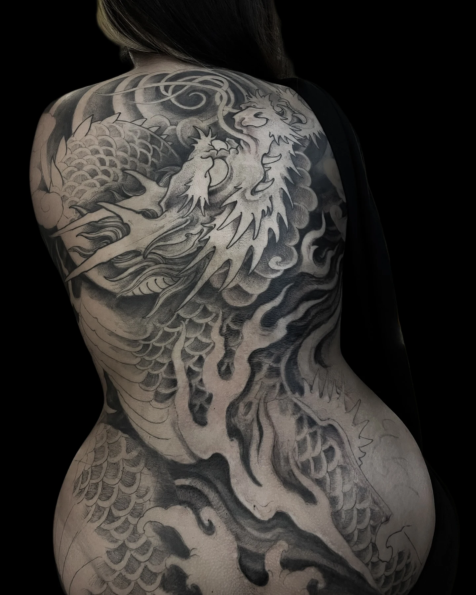
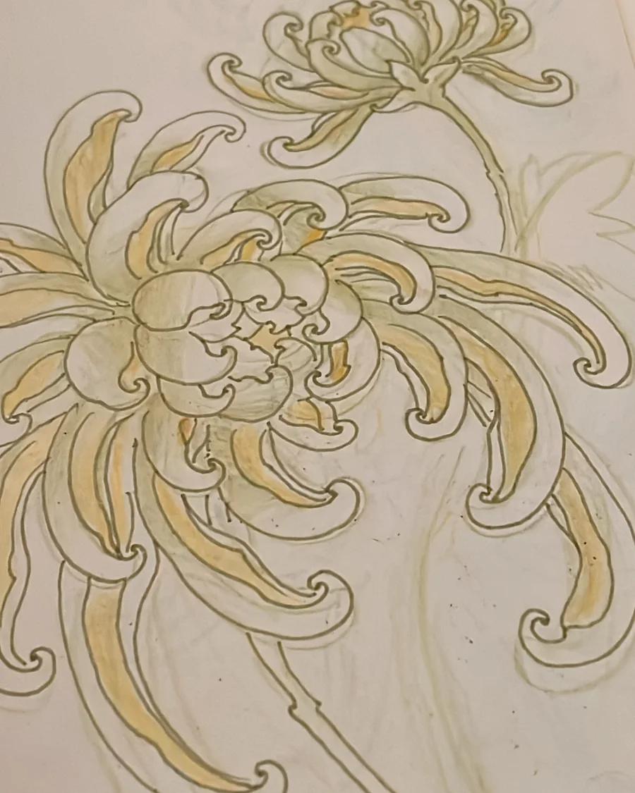
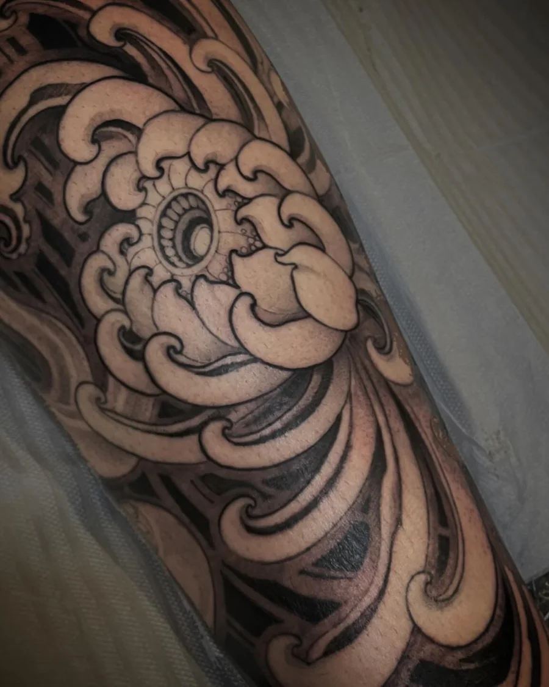
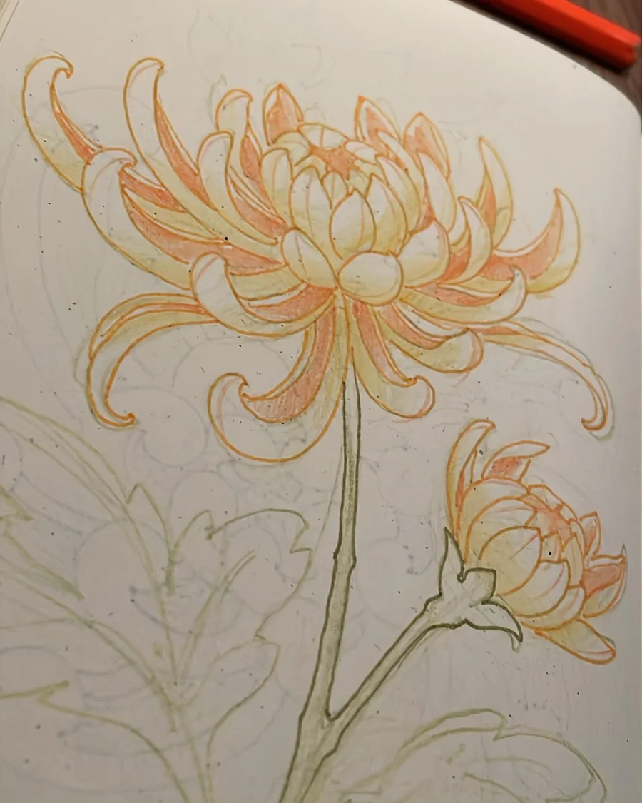
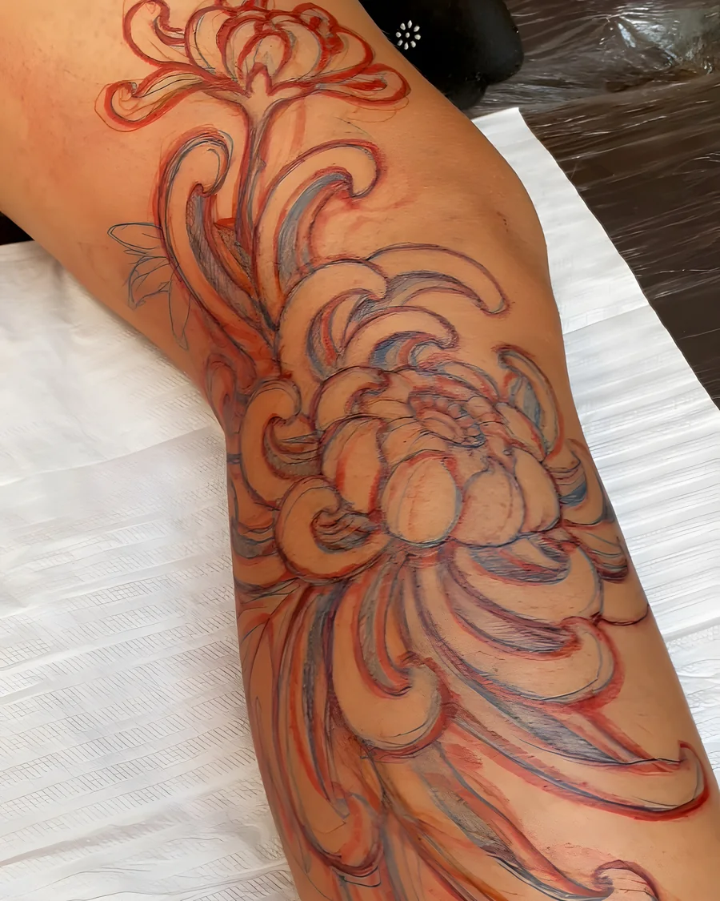
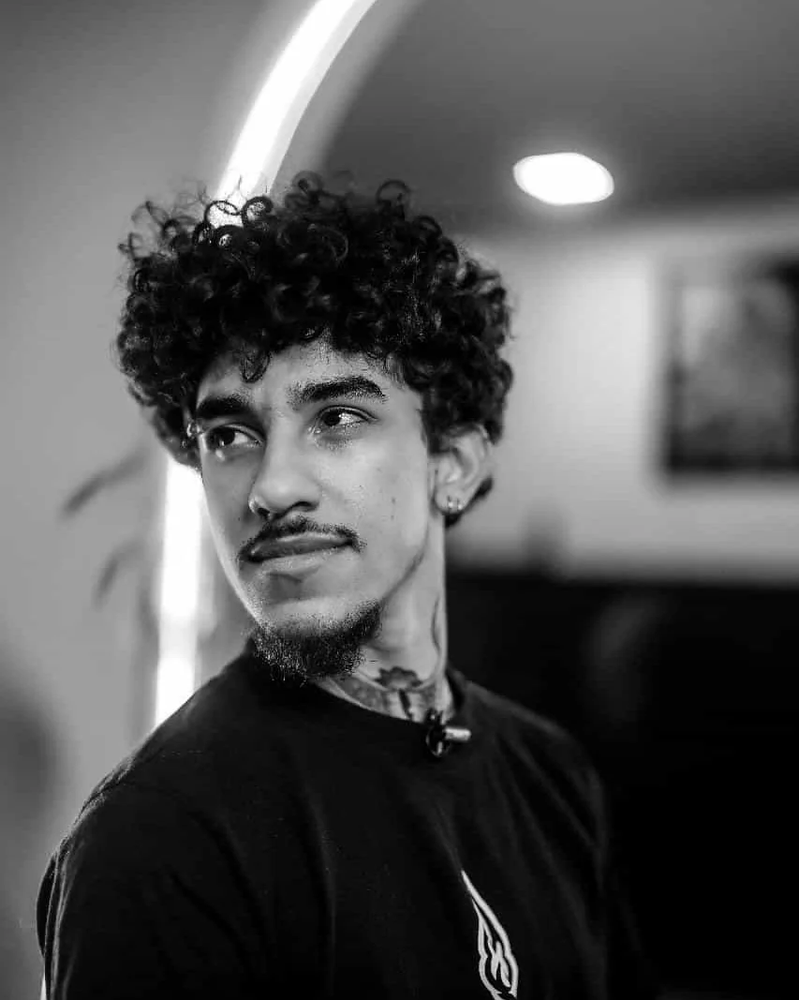
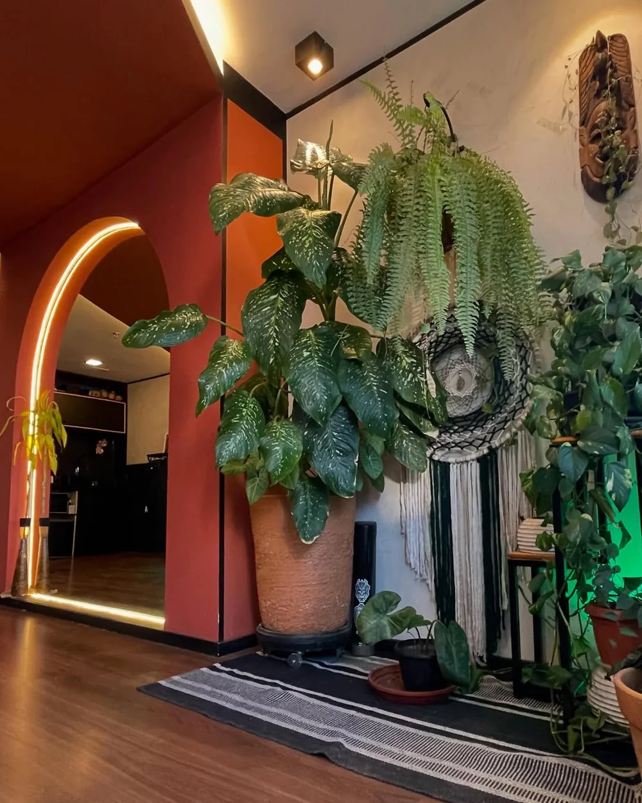
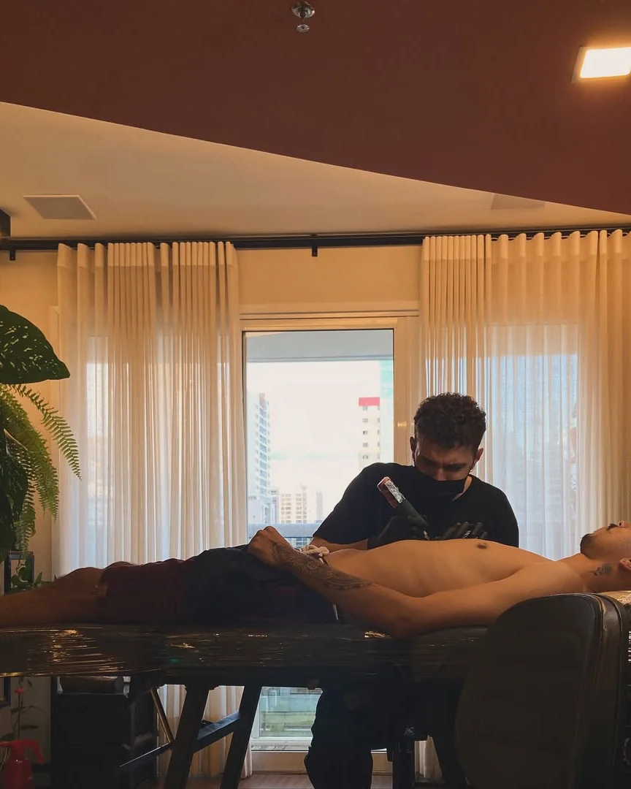
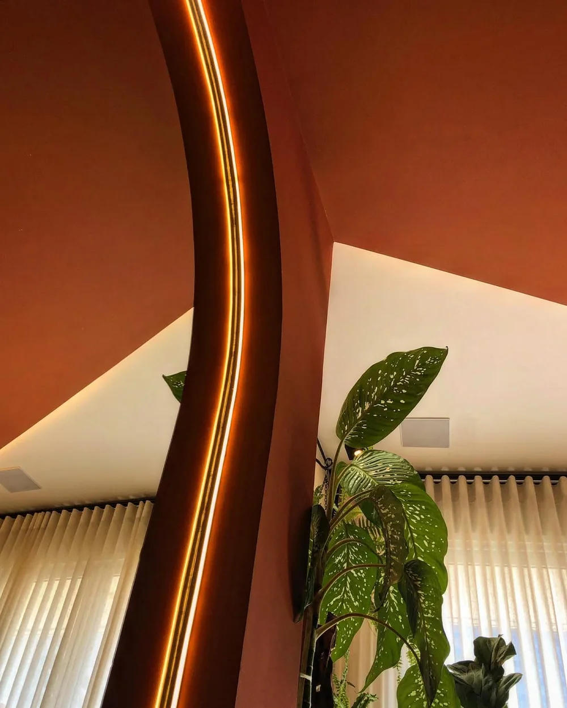

Vinny Spades, tatuador de oriental e fechamentos em Águas Claras, Brasília

Fechamentos
costas e braços
“Fechamento de costas exige muito comprometimento das duas partes, cliente e tatuador.” São projetos desenhados para o corpo inteiro da peça, sessão a sessão, no traço oriental.

“O poder de uma tatuagem está em quem a recebe.”
Vinny Spades, na revista Arte na Pele #05
Trabalhos
oriental e blackwork
Spades ♠
a série
Spades é o nome dele e também uma série: cada tatuagem desenhada dentro do naipe de espadas e numerada, uma a uma. Uma homenagem ao avô pescador e jogador de baralho, um olho, uma caveira, um peixe.
Do caderno à pele
desenho à mão
Antes da pele, o papel. O Vinny mantém um caderno só de crisântemos, pétala por pétala, e estuda ukiyo-e, art nouveau e xilogravura: linhas definidas e contraste forte, feitos para durar no corpo.




Coberturas
antes e depois
“Cobrir uma tatuagem é sempre um desafio e deve ser encarado com muito respeito.” Antes de começar, ele marca uma conversa presencial para alinhar cada detalhe.
Cicatrizadas
pelo mundo
Tatuagens feitas no Portal, já curadas, mandadas pelos próprios clientes de onde estiverem.
Vinny
o artista

Desenha desde pequeno e começou na ilustração digital. Em 2017, aos 17 anos, entrou na tatuagem em Brasília, primeiro tatuando amigos, depois como aprendiz do tatuador Tavares.
Fundou o Portal Tattoo Studio, em Águas Claras, onde atende hoje. Faz oriental, blackwork, fechamentos e coberturas, sempre com desenho exclusivo.
“Os clientes são pessoas que precisam ser respeitadas em sua individualidade, pois cada um chega com uma ideia que deve ser traduzida em tatuagem.”
- Revelaçãotrabalho premiado na maior convenção da Bahia
- Arte na Pele #05a trajetória dele na revista da A’CRON
- Como desenharsérie no YouTube sobre desenho oriental
- Tatuagem nunca morreo cordel que ele escreveu e imprimiu
Portal
o estúdio
Arcos de luz, plantas e privacidade, em Águas Claras. O Vinny fundou o Portal e divide o espaço com outros artistas.



No Google
5,0 em 241 avaliações
“Fiz minha primeira tatuagem elaborada e foi com o Vinny. Desde o início fui muito bem recepcionada, extremamente atencioso e cuidadoso em todo o processo.”Samilla Pereira
Orçamento
como marcar
- A ideiaVocê conta o que quer, o local do corpo e o tamanho.
- A conversaEle responde pelo WhatsApp. Coberturas e fechamentos têm conversa presencial.
- O desenhoArte exclusiva, feita para o seu corpo.
- A sessãoNo Portal, em Águas Claras, com hora marcada.